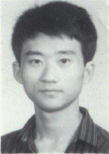

追求青春坐标上的无穷点
1+1+1+……= （“ ”在数学中表示“无穷大”），这是我的座右铭。我是安徽桐城人。桐城秀山丽水，文章名誉天下，可我却偏爱数学。1993年夏天，烫金的大学录取通知书圆了我的数学之梦。带着江南人特有的灵气，带着对知识的憧憬，金秋九月，我走进了师大数学系。面对偌大的图书馆，资料室丰富的资源，我欣喜若狂，“我可以看到多种工具书，我可以了解数学发展的前沿了！”从此一个瘦小的身影常常穿梭在图书馆资料室之间，我们数学系的专业课大多使用我校自己出版的课本，于是课下我便从图书馆借来了辽大、吉大、北大的教科书。学《数学分析》那会儿，我从资料室翻出吉米多维奇的习题集，一道题一道题地研究，还进行了大量广泛的科学杂志的阅读，
这使我了解到当今社会已被高科技席卷，已不再是少数高级科研人员的高谈阔论，而是当代人必须始苦苦的思索。认识、必须接受、必须掌握的崭新世界。现代社会所需的人才要具有对知识较强的应用能力。什么是应用能力？我开始思考怎样才能把平时所学的似乎不切实际的公式、定理及看似毫无用处的抽象理论作为实现人生现想，为社会创造财富的工具呢？
1994年，我校第一次组队参加全国大学生数学建模比赛。就在这时我了解到建模比赛的考题大多来自工厂、企业、矿山等，它用数学与计算机来解决现实生活中没有解决的实际问题。我雀跃了，觉得自己终于可以走向实现理想的大考场，于是我兴奋地报上名。参加比赛的选手大都是大学四年级的学长，仅入学一年的我，作为低年级唯一的选手参加了比赛。竞赛前我接受了一个月的集训，竞赛中三天三夜没合眼，守在计算机旁，列方程，画图……可是竞赛成绩并不理想，我有些怀疑自己了，“难道我不具备社会所需要的应用能力？”“难道我该放弃运用知识造福于人类的理想？”突然我想到了陈景润的成功是用麻袋装的草纸堆砌的；想到了居里夫人为了证实镭的存在，在设备简陋的棚屋不断实验不断失败奋斗了45个月才取得成功。每一个成功者都是踏着荆棘付出劳动，浸着汗水走向成功的，这小小的挫折算得了什么？我开始总结失败的原因，是由于几何知识太欠缺！自学，我一定要自学一门几何！竞赛一结束，我便拿起大学三年级的课本《高等几何》。功夫不负有心人，仅用一个月我就自学完了一个学期才能学完的课程，并且参加了三年级这门课程的考试，100分的卷子我居然得了95分。这求知路上小小的插曲，促成了我的成熟和睿智。我在95年第二次参加建模比赛，并获得了全国一等奖，而且是吉林赛区唯一的国家一等奖的获得者。老师同学们竞相向我祝贺，但我没有欣喜若狂，只是惨白的脸上露出了一丝笑容。惨白——那是熬夜的见证，多少个夜晚宿舍走廊里的灯光和天上的星星辉映着伴我苦读，谁知道我阅读了多少应用数学的书籍和期刊，那一撂撂摘抄的笔记躺在书架上便是告白。
“你对你所取得的成绩感到满意吗？”我时常这样问自己。“不，不满意！”我刚刚求得的只是知识海洋中的一个“1”，我追求的可是无穷啊！我开始给自己加码，大三的专业课7门，选修课2门，我又自修了研究生课，学习边缘数学——生物数学与经济数学。每周六上午，数学系部分老师、研究生以沙龙的形式在系教研室讨论一些学术上比较前沿的问题，在这批学者中间，时常有个本科生参与其中，那就是我。正是这种对知识的孜孜以求，正是这种勤奋与刻苦，使我在专业学习上取得了优异成绩，18门功课，门门是优，大学三年连年得一等奖学金。当然勤奋是我的一大特点，而成绩的获得更主要在于敢于质疑和提问。一个定理或理论，在我都是要经过千锤百炼、瞑思苦想的。要了解把握现代社会就要以知识为武器，不扎实可不行。别人为了考试只是泛泛看过书本，我却要把每一个知识环节弄得清清楚楚，如果能学以致用的，就还要朝着应用那条路子探索下去。按照这个原则我撰写了6篇关于应用的论文，其中《应用图解法解决实际问题》在我校首届学生成果申报中获一等奖，还有另两篇在这次申报中获三等奖。
追求知识是幸福的，而利用所学的知识为大家解决一点有实际意义的问题，才是最高兴最快乐的事儿。同学们也许以为我是一个痴迷在数学王国里留连忘返的科研迷，学习之外便一无是处。但是我绝不是书呆子。现代社会对人才要求已不再局限于知识。表达能力、交际能力、思维能力、创造能力等都已成为很重要的方面。作为一名师范生，在具备教师基本技能的基础上，更应具备这些能力。这些能力的获得是要通过多参与活动多锻炼才能实现的。我曾在系里担任多个职务，93级学科部部长、数学协会会长、系学科部部长。做学生干部就得天独厚地获得了提高能力的一个机会。数学协会是带动全系本科生专业课学习科研的主要机构。担任数学协会会长时，我可真下了番功夫。“开展数学竞赛”、“数学前沿探讨会”……我把方案一个个写出来，又涂去……请教老师、高年级同学，带着一份自信我开始干起来。分小组、出数学知识橱窗、开难题讨论会，一时间数学系到处都充满了研讨知识争辩难题的气氛。
大三改选时，我又被推荐为系学科部部长。接下这份职务，我眉头紧锁了。学科部下设数学、外语、计算机三大协会，而学科部有全系学风建设、学生科研能力、教师素质培养的重要职责，此时此刻我能不放在心上惦量惦量这份重量吗？干，不但要干，还要创新！我和学科部成员共同奋战，制订了自习课纪律及检查规章制度——促进数学系良好学风的形成；在系内开展系外语十佳、计算机十佳大赛——浓厚了全系外语计算机学习气氛。96年我校首届大学生科技文化节召开了，我举双手赞成，“师范生不能只懂课本上那点东西，应该去了解科技前沿，才能在未来更好导向学生为科技服务”，我太高兴了，可也犯愁了，让数学系学生都能普遍地参与这次科技文化节，单靠研究高深的理论应用可达不到，怎么办？师范生是面向基础教育的……对了，制作中学几何教具！以中学为基点，其理论水平可广泛迎合本科生，另一方面又使师范生在钻研中学教材的同时培养思考创造能力，为以后走向中学教育岗位奠定基础。好办法！我立即和学科部成员向全系推出了这一活动。各年级同学广泛响应，短短一周内共交上40多个方案。学校对此项活动也很重视，还拨给了我们400元立项基金。而后我又帮助几位专业成绩较突出的同学，写出9篇论文，这9篇论文在96年首届大学生论文申报中全部获奖。而我本人也由于在科研活动中起带头表率作用，成果显著，被评为校首届学生科研十佳。
有人怀疑上帝是否偏爱我，给了我比别人多得多的时间。其实我最渴望的也是时间。我能不渴望有时间给家里写封长信谈谈北方的冰雪吗？能不渴望有时间去驰名中外的长春汽车厂看一看吗？可是三年来，就连离师大最近的南湖公园我都没去逛过。别人午休时，我在思考工作或者翻看订阅的《演讲与口才》；别人消遣时，我在学生会里工作或者在教室的黑板上练粉笔字……“那你不感到累吗？你没想得个空儿休息休息吗？”也有同学这样问我。我的回答是：“当你的眼界越开阔，你的理想越远大，你就感觉肩上的担子越沉重，你就觉得自己得多学点多做点什么，你就越觉得自己一刻也不能休息，好像身后永远有激越的鼓点催着你猛跑”。
在人生求索的途中，确立坐标点，纵横交错，犹如在二维平面上，可选择一个近点，摘取一只叶片；也可求索一个远点，那里有一棵大树。我选择的可是一个无穷远点，追求的是一片森林啊！我那执着追求的动力是什么？我能量的源泉是什么？因为我是一名党员，我拥有的是对共产主义不懈的追求，在这个目标下，怎能没有勤勉的学风，怎能没有惊人的毅力，又怎能不去发展能力、设计自己为实现远大目标而奋斗呢？党员就意味着带头，“带头是要带起大家来，去求知、去发展、去为我们社会主义做贡献，而不是一个人发展，一支花开可不是春天”。这是我一贯的信念。面对大学校园里激烈的竞争，有的同学自卑了，我悄悄地去敲警钟，“小心，自卑可是时间上最巨大的舞台，从而使数学家在其上载歌载舞”。“他在给朋友的明信片上这样写：你是正数那么我就是负数，咱俩同属有理数。”在报告中我还以自己为例，为中学生的学习成长提了一些建议，我想没有什么说教能比这来得更实际了。我家境贫寒，但却从没向学校要过一次困难补助。为了谋求经济独立，我做两份家教。家教收入加上奖学金、助学金够花了，还能省下点寄回家里，95年我就把得的两千元宝钢教育奖学金全部寄给了家里。生活道路上的艰辛对比所取得的荣誉，我相信更能激起中学生去热爱生活，去驾驭生活的航船。看到无论是省实验的中学生，还是附中的入党积极分子，听完报告后都是神采飞扬，充满了对数学知识的憧憬，充满了与生活挑战的信心，我开心的笑了。又默默地回到系里，开始了忙碌的学习、忙碌的工作。三年我连年获得一等奖学金、优秀学生的称号，曾获得宝钢教育奖学金、专业学习十佳，首届学生科研十佳、优秀团员等荣誉称号。
“你怎么一点也不骄不躁呢？”我总是听到这样的声音。“这点成绩比起我们社会主义事业的伟大成就算得了什么？有什么理由骄傲呢？我盼望我们这一代人明天有能力迎接高科技挑战，都能胜任社会主义建设的职责！”我坚决地告诉他们。我憧憬的正是百花齐放的春天！
青春是唯一值得拥有的东西，每个人都可以选择自己青春坐标上的一点，我选择了最遥远的无穷点，我要用一个“1”一个“1”地去筑起通向无穷远点的轨迹，那是踏实而又艰难的，但我心中有一份坚定的共产主义信念，有一种对百花齐放春天的渴望，所以那又是幸福而愉快的。
最近我由于专业课成绩优秀，科研成果突出，在全系老师同学一致推荐下，被保送数学系攻读硕士学位。我坚信，我将在长春这块黑土地上继续迎接朝阳，继续在青春的坐标上去追求无穷点！
“你对你所取得的成绩感到满意吗？”我时常这样问自己。“不，不满意！”我刚刚求得的只是知识海洋中的一个“1”，我追求的可是无穷啊！我开始给自己加码，大三的专业课7门，选修课2门，我又自修了研究生课，学习边缘数学——生物数学与经济数学。每周六上午，数学系部分老师、研究生以沙龙的形式在系教研室讨论一些学术上比较前沿的问题，在这批学者中间，时常有个本科生参与其中，那就是我。正是这种对知识的孜孜以求，正是这种勤奋与刻苦，使我在专业学习上取得了优异成绩，18门功课，门门是优，大学三年连年得一等奖学金。当然勤奋是我的一大特点，而成绩的获得更主要在于敢于质疑和提问。一个定理或理论，在我都是要经过千锤百炼、瞑思苦想的。要了解把握现代社会就要以知识为武器，不扎实可不行。别人为了考试只是泛泛看过书本，我却要把每一个知识环节弄得清清楚楚，如果能学以致用的，就还要朝着应用那条路子探索下去。按照这个原则我撰写了6篇关于应用的论文，其中《应用图解法解决实际问题》在我校首届学生成果申报中获一等奖，还有另两篇在这次申报中获三等奖。
追求知识是幸福的，而利用所学的知识为大家解决一点有实际意义的问题，才是最高兴最快乐的事儿。同学们也许以为我是一个痴迷在数学王国里留连忘返的科研迷，学习之外便一无是处。但是我绝不是书呆子。现代社会对人才要求已不再局限于知识。表达能力、交际能力、思维能力、创造能力等都已成为很重要的方面。作为一名师范生，在具备教师基本技能的基础上，更应具备这些能力。这些能力的获得是要通过多参与活动多锻炼才能实现的。我曾在系里担任多个职务，93级学科部部长、数学协会会长、系学科部部长。做学生干部就得天独厚地获得了提高能力的一个机会。数学协会是带动全系本科生专业课学习科研的主要机构。担任数学协会会长时，我可真下了番功夫。“开展数学竞赛”、“数学前沿探讨会”……我把方案一个个写出来，又涂去……请教老师、高年级同学，带着一份自信我开始干起来。分小组、出数学知识橱窗、开难题讨论会，一时间数学系到处都充满了研讨知识争辩难题的气氛。
大三改选时，我又被推荐为系学科部部长。接下这份职务，我眉头紧锁了。学科部下设数学、外语、计算机三大协会，而学科部有全系学风建设、学生科研能力、教师素质培养的重要职责，此时此刻我能不放在心上惦量惦量这份重量吗？干，不但要干，还要创新！我和学科部成员共同奋战，制订了自习课纪律及检查规章制度——促进数学系良好学风的形成；在系内开展系外语十佳、计算机十佳大赛——浓厚了全系外语计算机学习气氛。96年我校首届大学生科技文化节召开了，我举双手赞成，“师范生不能只懂课本上那点东西，应该去了解科技前沿，才能在未来更好导向学生为科技服务”，我太高兴了，可也犯愁了，让数学系学生都能普遍地参与这次科技文化节，单靠研究高深的理论应用可达不到，怎么办？师范生是面向基础教育的……对了，制作中学几何教具！以中学为基点，其理论水平可广泛迎合本科生，另一方面又使师范生在钻研中学教材的同时培养思考创造能力，为以后走向中学教育岗位奠定基础。好办法！我立即和学科部成员向全系推出了这一活动。各年级同学广泛响应，短短一周内共交上40多个方案。学校对此项活动也很重视，还拨给了我们400元立项基金。而后我又帮助几位专业成绩较突出的同学，写出9篇论文，这9篇论文在96年首届大学生论文申报中全部获奖。而我本人也由于在科研活动中起带头表率作用，成果显著，被评为校首届学生科研十佳。
有人怀疑上帝是否偏爱我，给了我比别人多得多的时间。其实我最渴望的也是时间。我能不渴望有时间给家里写封长信谈谈北方的冰雪吗？能不渴望有时间去驰名中外的长春汽车厂看一看吗？可是三年来，就连离师大最近的南湖公园我都没去逛过。别人午休时，我在思考工作或者翻看订阅的《演讲与口才》；别人消遣时，我在学生会里工作或者在教室的黑板上练粉笔字……“那你不感到累吗？你没想得个空儿休息休息吗？”也有同学这样问我。我的回答是：“当你的眼界越开阔，你的理想越远大，你就感觉肩上的担子越沉重，你就觉得自己得多学点多做点什么，你就越觉得自己一刻也不能休息，好像身后永远有激越的鼓点催着你猛跑”。
在人生求索的途中，确立坐标点，纵横交错，犹如在二维平面上，可选择一个近点，摘取一只叶片；也可求索一个远点，那里有一棵大树。我选择的可是一个无穷远点，追求的是一片森林啊！我那执着追求的动力是什么？我能量的源泉是什么？因为我是一名党员，我拥有的是对共产主义不懈的追求，在这个目标下，怎能没有勤勉的学风，怎能没有惊人的毅力，又怎能不去发展能力、设计自己为实现远大目标而奋斗呢？党员就意味着带头，“带头是要带起大家来，去求知、去发展、去为我们社会主义做贡献，而不是一个人发展，一支花开可不是春天”。这是我一贯的信念。面对大学校园里激烈的竞争，有的同学自卑了，我悄悄地去敲警钟，“小心，自卑可是时间上最巨大的舞台，从而使数学家在其上载歌载舞”。“他在给朋友的明信片上这样写：你是正数那么我就是负数，咱俩同属有理数。”在报告中我还以自己为例，为中学生的学习成长提了一些建议，我想没有什么说教能比这来得更实际了。我家境贫寒，但却从没向学校要过一次困难补助。为了谋求经济独立，我做两份家教。家教收入加上奖学金、助学金够花了，还能省下点寄回家里，95年我就把得的两千元宝钢教育奖学金全部寄给了家里。生活道路上的艰辛对比所取得的荣誉，我相信更能激起中学生去热爱生活，去驾驭生活的航船。看到无论是省实验的中学生，还是附中的入党积极分子，听完报告后都是神采飞扬，充满了对数学知识的憧憬，充满了与生活挑战的信心，我开心的笑了。又默默地回到系里，开始了忙碌的学习、忙碌的工作。三年我连年获得一等奖学金、优秀学生的称号，曾获得宝钢教育奖学金、专业学习十佳，首届学生科研十佳、优秀团员等荣誉称号。
“你怎么一点也不骄不躁呢？”我总是听到这样的声音。“这点成绩比起我们社会主义事业的伟大成就算得了什么？有什么理由骄傲呢？我盼望我们这一代人明天有能力迎接高科技挑战，都能胜任社会主义建设的职责！”我坚决地告诉他们。我憧憬的正是百花齐放的春天！
青春是唯一值得拥有的东西，每个人都可以选择自己青春坐标上的一点，我选择了最遥远的无穷点，我要用一个“1”一个“1”地去筑起通向无穷远点的轨迹，那是踏实而又艰难的，但我心中有一份坚定的共产主义信念，有一种对百花齐放春天的渴望，所以那又是幸福而愉快的。
最近我由于专业课成绩优秀，科研成果突出，在全系老师同学一致推荐下，被保送数学系攻读硕士学位。我坚信，我将在长春这块黑土地上继续迎接朝阳，继续在青春的坐标上去追求无穷点！